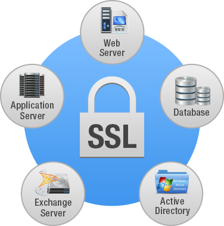

Seguridad en la Web
SSL (Secure Socket Layer)
SSL o Secure Sockets Layer es un protocolo de seguridad de Internet basado en el cifrado. Inicialmente fue desarrollado por Netscape en 1995 para garantizar la privacidad, la autenticación y la integridad de los datos en las comunicaciones de Internet. SSL es el predecesor del cifrado TLS moderno que se utiliza hoy en día.
Los sitios web que implementan SSL/TLS tienen "HTTPS" en su URL en lugar de "HTTP".
Para ofrecer un alto grado de privacidad, SSL cifra los datos que se transmiten por la web. Por ello, cualquiera que intente interceptar estos datos se encontrará con una mezcla confusa de caracteres, que será muy difícil de descifrar.
SSL inicia un proceso de autenticación, conocido como establecimiento de comunicación, entre dos dispositivos que se comunican para garantizar que ambos sean lo que aparentan.
Además, SSL firma digitalmente los datos para proporcionar integridad de datos, que verifica que no se hayan manipulado los datos antes de alcanzar al destinatario designado.
Ha habido diversas iteraciones de SSL, cada una más segura que la anterior. En 1999, SSL se actualizó para convertirse en TLS. Sin embargo, el SSL no se ha actualizado desde el SSL 3.0 en 1996 y, hoy en día, se considera que está obsoleto. El protocolo SSL tiene varias vulnerabilidades conocidas y, por ello, los expertos en seguridad recomiendan que se deje de usar. De hecho, la mayoría de los navegadores web modernos ya no son compatibles con SSL. El TLS es el protocolo de cifrado actualizado que se sigue implementando en línea, aunque todavía muchos lo llaman "cifrado SSL". Esto puede ser confuso para los consumidores interesados en adquirir soluciones de seguridad. Lo cierto es que cualquier proveedor que ofrezca "SSL" hoy en día proporcionará, con toda probabilidad, protección TLS, que es el estándar del sector desde hace casi veinte años. Sin embargo, debido a que mucha gente todavía busca "protección SSL", el término sigue apareciendo en muchas páginas de productos.